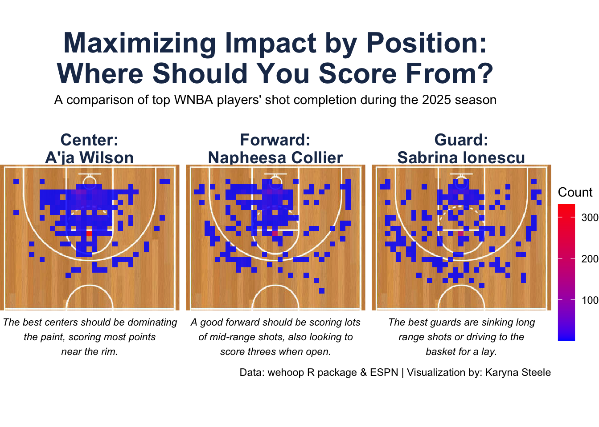

Professional Viz Sample
# A tibble: 6 × 62
game_play_number id sequence_number type_id type_text text away_score
<int> <dbl> <int> <int> <chr> <chr> <int>
1 1 4.02e 9 4 615 Jumpball NaLy… 0
2 2 4.02e 9 7 131 Pullup J… Kahl… 0
3 3 4.02e 9 8 155 Defensiv… Jack… 0
4 4 4.02e 9 9 95 Layup Sh… NaLy… 0
5 5 4.02e10 10 156 Offensiv… NaLy… 0
6 6 4.02e10 11 125 Layup Sh… NaLy… 2
# ℹ 55 more variables: home_score <int>, period_number <int>,
# period_display_value <chr>, clock_display_value <chr>, scoring_play <lgl>,
# score_value <int>, team_id <int>, athlete_id_1 <int>, athlete_id_2 <int>,
# athlete_id_3 <int>, wallclock <chr>, shooting_play <lgl>,
# coordinate_x_raw <dbl>, coordinate_y_raw <dbl>, game_id <int>,
# season <int>, season_type <int>, home_team_id <int>, home_team_name <chr>,
# home_team_mascot <chr>, home_team_abbrev <chr>, home_team_name_alt <chr>, … [1] "game_play_number" "id"
[3] "sequence_number" "type_id"
[5] "type_text" "text"
[7] "away_score" "home_score"
[9] "period_number" "period_display_value"
[11] "clock_display_value" "scoring_play"
[13] "score_value" "team_id"
[15] "athlete_id_1" "athlete_id_2"
[17] "athlete_id_3" "wallclock"
[19] "shooting_play" "coordinate_x_raw"
[21] "coordinate_y_raw" "game_id"
[23] "season" "season_type"
[25] "home_team_id" "home_team_name"
[27] "home_team_mascot" "home_team_abbrev"
[29] "home_team_name_alt" "away_team_id"
[31] "away_team_name" "away_team_mascot"
[33] "away_team_abbrev" "away_team_name_alt"
[35] "game_spread" "home_favorite"
[37] "game_spread_available" "home_team_spread"
[39] "qtr" "time"
[41] "clock_minutes" "clock_seconds"
[43] "home_timeout_called" "away_timeout_called"
[45] "half" "game_half"
[47] "lead_qtr" "lead_half"
[49] "start_quarter_seconds_remaining" "start_half_seconds_remaining"
[51] "start_game_seconds_remaining" "end_quarter_seconds_remaining"
[53] "end_half_seconds_remaining" "end_game_seconds_remaining"
[55] "period" "lag_qtr"
[57] "lag_half" "coordinate_x"
[59] "coordinate_y" "game_date"
[61] "game_date_time" "type_abbreviation" Code
wilson <- 3149391
collier <- 3917450
ionescu <- 4066533
df <- wnba %>%
filter(scoring_play == TRUE) %>%
filter(athlete_id_1 %in% c(ionescu, wilson, collier)) %>%
select(athlete_id_1, type_text, coordinate_x_raw, coordinate_y_raw) %>%
mutate(player = case_when(
athlete_id_1 == ionescu ~ "Sabrina Ionescu",
athlete_id_1 == wilson ~ "A'ja Wilson",
athlete_id_1 == collier ~ "Napheesa Collier")) %>%
mutate(position = case_when(
player == "A'ja Wilson" ~ "Center",
player == "Napheesa Collier" ~ "Forward",
player == "Sabrina Ionescu" ~ "Guard"
)) %>%
mutate(coordinate_y_raw = coordinate_y_raw + 4)
head(df)# A tibble: 6 × 6
athlete_id_1 type_text coordinate_x_raw coordinate_y_raw player position
<int> <chr> <dbl> <dbl> <chr> <chr>
1 3149391 Free Throw - 1… 25 17.8 A'ja … Center
2 3149391 Free Throw - 2… 25 17.8 A'ja … Center
3 3149391 Pullup Jump Sh… 25 14 A'ja … Center
4 3149391 Driving Layup … 21 6 A'ja … Center
5 3149391 Free Throw - 1… 25 17.8 A'ja … Center
6 3149391 Running Layup … 21 6 A'ja … Center Code
desc <- data.frame(
position = c("Guard", "Forward", "Center"),
x = 25, # center horizontally
y = 50, # place below your plotted court range
label = c(
"The best guards are sinking long\nrange shots or driving to the\nbasket for a lay.",
"A good forward should be scoring lots\nof mid-range shots, also looking to\nscore threes when open.",
"The best centers should be dominating\nthe paint, scoring most points\nnear the rim."
)
)
facet_labels <- c(
Guard = "Guard:\nSabrina Ionescu",
Forward = "Forward:\nNapheesa Collier",
Center = "Center:\nA'ja Wilson"
)
ggplot(df, aes(x = coordinate_x_raw, coordinate_y_raw)) +
annotation_raster(
full,
xmin = -5, xmax = 55,
ymin = -42, ymax = 5
) +
geom_bin2d(bins = 30, alpha = 0.85) +
geom_text(data = desc, aes(x = x, y = y, label = label),
size = 3, fontface = "italic", vjust = 0.5, color = "black") +
coord_fixed(xlim = c(0, 50), ylim = c(55, 0)) +
scale_y_reverse() +
scale_fill_gradient(
low = "blue",
high = "red",
name = "Count",
guide = guide_colorbar(
barwidth = 1,
barheight = 8,
title.position = "top"
)
) +
facet_wrap(~position, labeller = labeller(position = facet_labels)) +
theme_void() +
theme(
plot.title = element_text(hjust = 0.5, vjust = 5, face = "bold", color = "#1D3557", size = 24),
plot.subtitle = element_text(hjust = 0.5, vjust = 10),
strip.text = element_text(face = "bold", size = 14, color = "#1D3557", hjust = 0.5),
legend.position = "right"
) +
labs(
title = "Maximizing Impact by Position:\nWhere Should You Score From?",
subtitle = "A comparison of top WNBA players' shot completion during the 2025 season",
caption = "Data: wehoop R package & ESPN | Visualization by: Karyna Steele"
)